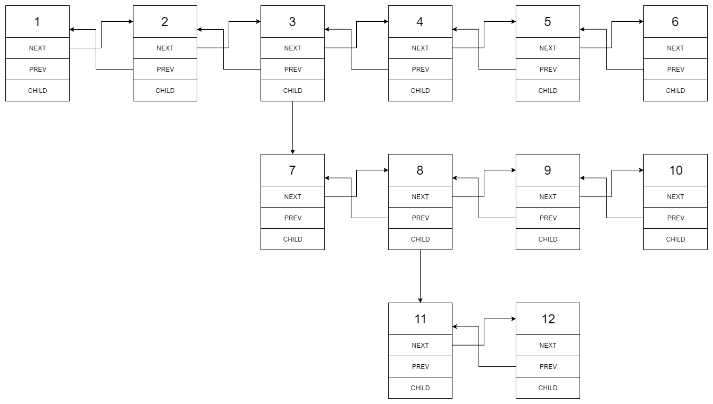

寒假力扣日志
本文最后更新于：10 months ago
刷题顺序参考如下：https://leetcode-cn.com/circle/article/48kq9d/
目录
链表相关
力扣203移除链表元素
难点在于如何处理头节点。解决方法是添加一个哨兵节点(dummy node)。
ListNode* removeElements(ListNode* head, int val) {
if(!head)return NULL;
ListNode* newhead = new ListNode();
newhead->next = head;
ListNode* pre, *cur;
pre = newhead;
cur = head;
while(cur){
ListNode* temp = nullptr;
if(cur->val == val){
pre->next = cur->next;
temp = cur;
cur = cur->next;
delete temp;
}
if(temp)continue;
cur = cur->next;
pre = pre->next;
}
ListNode* temp = newhead->next;
delete newhead;
return temp;
}力扣237删除链表中的节点
算法思路
这道题函数中只有一个节点，要求删除该节点。（没有给出头节点）
一道简单的脑筋急转弯。由于题目强调了绝对不会删除掉尾节点，只需把下一个节点的元素赋给node，删除掉下一个节点即可。
代码实现
void deleteNode(ListNode* node) {
node->val = node->next->val;
node->next = node->next->next;
// ListNode* temp = node->next;
// delete temp;
}注意：在实现的过程中还是出现了问题，上面注释掉的代码，为什么不正确？
下面这篇文章讲的很好，c++的指针类型分为静态分配和动态分配。
delete只能用于释放堆指针，也就是new出来的指针，而不能用于栈指针。
如果在
deleteNode前在使用c节点本身，那就可能引发不确定行为。由于
ListNode是个单链表节点，而单链表节点本质上是无法做到在链表里删除自身的，所以这题只能通过这种替换的方式来伪造删除了节点。这题会误导很多开发者，这题的设计模式更是不可取！
个人认为这题应该删除
而203. 移除链表元素这题才是真正的移除链表元素！
作者：AmazingPP
链接：https://leetcode-cn.com/problems/delete-node-in-a-linked-list/solution/tong-pi-ci-ti-li-ying-shan-chu-yin-chu-c-taij/
来源：力扣（LeetCode）
著作权归作者所有。商业转载请联系作者获得授权，非商业转载请注明出处。
力扣19 删除链表的倒数第 N 个结点
算法思路
方法一：暴力法
1. 遍历一遍，获取链表的长度
2. 再循环L-n-1次，获取目标结点的前一个结点。
方法二：快慢指针法（只需遍历一遍）
代码实现
ListNode* removeNthFromEnd(ListNode* head, int n) {
ListNode* dummynode = new ListNode();
dummynode->next = head;
ListNode* fast = dummynode;
ListNode* slow = dummynode;
for(int i = 0; i < n; i ++){
fast = fast->next;
}
while(fast->next){
fast = fast->next;
slow = slow->next;
}
ListNode* temp = slow->next;
slow->next = slow->next->next;
delete temp;
return dummynode->next;
}力扣430 扁平化多级双向链表
题目要求

变化为

算法思路
- DFS（事实上，歪着脖子看，就是二叉树的前序遍历）将结点存入数组中
- 遍历数组，从新连接结点
代码实现
class Solution {
vector<Node*> arr;
public:
void dfs(Node* head){
if(!head)return;
arr.push_back(head);
dfs(head->child);
dfs(head->next);
}
Node* flatten(Node* head) {
dfs(head);
int size = arr.size();
for(int i = 0; i < size; i++){
if(i+1 < size) arr[i]->next = arr[i+1];
if(i>0) arr[i]->prev = arr[i-1];
arr[i]->child = NULL;
}
return head;
}
};因为前两天学习到很多方法，所以今天的题目都能很快完成
力扣61 旋转链表
力扣24 两两交换链表中的节点
力扣206 反转链表
算法思路
-
迭代法（三指针）
class Solution { public: ListNode* reverseList(ListNode* head) { ListNode* dummynode = new ListNode(0,head); if(dummynode->next == NULL || dummynode->next->next == NULL)return head; ListNode* pre = NULL; ListNode* mid = dummynode->next; ListNode* tail = dummynode->next->next; while(1){ mid->next = pre; if(tail == NULL)break; pre = mid; mid = tail; tail = tail->next; } return mid; } }; -
递归法
class Solution { public: ListNode* reverseList(ListNode* head) { if (!head || !head->next) { return head; } ListNode* newHead = reverseList(head->next); head->next->next = head; //下一个结点指回自己 head->next = NULL; return newHead; } };
力扣92 反转链表 II
算法思路
该题难点在于要求一次遍历，需要理清变量的位置。
哨兵节点：dummynode
反转链表需要三个变量：fir、sec、thr
确定反转后的头和尾需要两个变量：pre、tail
代码实现
class Solution {
public:
ListNode* reverseBetween(ListNode* head, int m, int n) {
if(!head)return NULL;
if(!head->next)return head;
if(m == n)return head;
ListNode* dummynode = new ListNode(0,head);
ListNode* fir = dummynode;
ListNode* sec = dummynode->next;
ListNode* thr = dummynode->next->next;
ListNode* pre;//连接m点
ListNode* tail;//连接n点
while(thr){
if(m == 1)break;
fir = sec;
sec = thr;
thr = thr->next;
n--;
m--;
}
pre = fir;
tail = sec;
while(thr){
fir= sec;
sec = thr;
thr = thr->next;
sec->next = fir;
n--;
if(n == 1)break;
}
tail->next = thr;
pre->next = sec;
return dummynode->next;
}
};力扣25 K 个一组翻转链表
算法思路
- 遍历一遍链表，获得链表长度
cnt，根据cnt分割出每段len - 用三指针进行反转
与上题类似。可以继续沿用上题的我画的图
！！！注意注意！！！花了半个小时debug，问题在于 fir = tail;反转一段链表后，需要更新fir为tail
代码实现
class Solution {
public:
ListNode* reverseKGroup(ListNode* head, int k) {
if(!head)return NULL;
if(!head->next)return head;
ListNode* dummynode = new ListNode(0,head);
//得到长度
ListNode* cur = dummynode;
int cnt = 0;
while(cur){
cnt++;
cur = cur->next;
}
cnt--;
int len = cnt/k;
ListNode* fir = dummynode;
ListNode* sec = dummynode->next;
ListNode* thr = dummynode->next->next;
ListNode* pre;
ListNode* tail;
for(int i = 0 ; i < len; i ++){
pre = fir;
tail = sec;
for(int j = 0; j < k; j ++){
sec->next = fir;
fir = sec;
sec = thr;
if(thr == NULL) thr = NULL;
else thr = thr->next;
}
pre->next = fir;
tail->next = sec;
fir = tail;
}
return dummynode->next;
}
};思考：如何只用一次遍历。太累了，以后再解决吧。
力扣21 合并两个有序链表
力扣2 两数相加
力扣445 两数相加 II
算法思路
- 由于需要逆序处理链表，从个位开始相加，所以可以考虑使用栈
- 引入一个
carry变量作为进位
代码实现
class Solution {
public:
ListNode* addTwoNumbers(ListNode* l1, ListNode* l2) {
stack<int> s1;
stack<int> s2;
ListNode* cur;
//遍历l1
cur = l1;
while(cur){
s1.push(cur->val);
cur = cur->next;
}
//遍历l2
cur = l2;
while(cur){
s2.push(cur->val);
cur = cur->next;
}
ListNode* ans = NULL;
int carry = 0;
//当l1为空，l2为空，carry为0时结束循环
while(!s1.empty()|| !s2.empty() || carry){
int left = 0;
int right = 0;
if(!s1.empty()){
left = s1.top();
s1.pop() ;
}
if(!s2.empty()){
right = s2.top();
s2.pop();
}
int newval = left+right+carry;
carry = newval/10;
newval = newval%10;
ListNode* node = new ListNode(newval);
node->next = ans;
ans = node;
}
return ans;
}
};力扣23 合并K个升序链表
算法思路一、
一种想法是将所有结点打散，存在一个优先队列中。但是耗时较长

但是，可以直接的考虑应该是每次取出各个链表的第一个元素，放入优先队列。
学习优先队列的使用方法，熟悉for(auto node : lists){}这种遍历方式。
class Solution {
struct Status {
int val;
ListNode *ptr;
bool operator < (const Status &rhs) const {
return val > rhs.val;
}
};
public:
ListNode* mergeKLists(vector<ListNode*>& lists) {
priority_queue<Status> q;
for (auto node: lists) {
if (node) q.push({node->val, node});
}
ListNode* dummynode = new ListNode(0);
ListNode* tail = dummynode;
while (!q.empty()) {
auto front = q.top(); q.pop();
tail->next = front.ptr;
tail = tail->next;
if (front.ptr->next) q.push({front.ptr->next->val, front.ptr->next});
}
return dummynode->next;
}
};算法思路二、
分治合并。

需要两个函数：1.用于合并两个链表；2.分治递归
class Solution {
public:
//合并两个链表
ListNode* merge2Lists(ListNode* l1, ListNode* l2){
if(!l1 && !l2)return NULL;
if(!l1 )return l2;
if(!l2) return l1;
ListNode* cur1 = l1;
ListNode* cur2 = l2;
ListNode* dummynode = new ListNode(0);
ListNode* cur = dummynode;
while(cur1 && cur2){
if(cur1->val < cur2->val){
ListNode* temp = new ListNode(cur1->val);
cur->next = temp;
cur1 = cur1->next;
cur = cur->next;
}else if(cur1->val >= cur2->val){
ListNode* temp = new ListNode(cur2->val);
cur->next = temp;
cur2 = cur2->next;
cur = cur->next;
}
}
cur->next = cur1? cur1 : cur2;
return dummynode->next;
}
//递归
ListNode* fun(vector<ListNode*>& lists, int left, int right){
int mid = (left + right)/2;
if(left == right)return lists[left];
if(left > right)return NULL;
ListNode* ans = merge2Lists(fun(lists, left, mid),fun(lists, mid+1, right));
return ans;
}
ListNode* mergeKLists(vector<ListNode*>& lists) {
return fun(lists, 0, lists.size()-1);
}
};链表暂告一段落…
数组相关
力扣485 最大连续1的个数
力扣495 提莫攻击
力扣414 第三大的数
力扣 剑指 Offer 40. 最小的k个数
力扣628 三个数的最大乘积
力扣645 错误的集合
https://leetcode-cn.com/problems/set-mismatch/solution/cyi-huo-fa-xiang-jie-by-feng-feng-19/
力扣697 数组的度
算法思路
- 构建一个
unordered_map<int,pair<int,int>>，其中pair包含数据出现次数与数据第一次出现的坐标
力扣448 找到所有数组中消失的数字
动态规划相关

动态规划组成部分：
-
确定状态：最后一步和子问题

-
转移方程
-
初始条件和边界情况

-
计算顺序（递归：自顶向下，动态规划：自底向上）

力扣338 比特位计数
算法思路
要输出二进制数的‘1’的个数，只需要考虑两种情况：
- 奇数：$f(i) = f(i-1)+1$
- 偶数：$f(i) = f(i/2)$
代码实现
class Solution {
public:
vector<int> countBits(int num) {
vector<int> ans;
if(num >= 0)ans.push_back(0);
if(num >= 1)ans.push_back(1);
for(int i = 2; i <= num; i ++){
if(i%2 == 1){
ans.push_back(ans[i-1]+1);
}else{
ans.push_back(ans[i/2]);
}
}
return ans;
}
};力扣45 跳跃游戏 II
第一种思路使用动态规划：
另开数组记录每一个位置的步数，然后$f(x) = min({f(0),f(1),…f(x-1)})+1$
时间复杂度为$O(n^2)$
第二种思路，从后往前
最坏时间复杂度也为$O(n^2)$，超出时间
class Solution {
public:
int jump(vector<int>& nums) {
int pos = nums.size()-1;
int ans = 0;
while(pos!=0){
for(int i = 0; i < pos; i ++){
if(nums[i]+i >= pos){
pos = i;
ans ++;
break;
}
}
}
return ans;
}
};第三种思路，贪心算法
时间复杂度为$O(n)$
在2的后面的两个数之中，找出一个能到达最远位置的数

在3的后面的三个数之中，找出一个能到达最远位置的数

class Solution {
public:
int jump(vector<int>& nums) {
int ans = 0;
int end = 0;
int maxpos = 0;
for(int i = 0; i < nums.size()-1; i ++){
maxpos = max(maxpos,nums[i]+i);
if(i == end){
end = maxpos;
ans++;
}
}
return ans;
}
};力扣198 打家劫舍
算法思路
转移方程：$f(i) = max(f(i-1),f(i-2)+nums[i])$
代码实现
class Solution {
public:
int rob(vector<int>& nums) {
if(nums.size() == 0)return 0;
int size = nums.size();
int arr[size];
if(size >= 1)arr[0] = nums[0];
if(size >= 2)arr[1] = max(nums[0],nums[1]);
for(int i = 2; i < size; i ++){
arr[i] = max(arr[i-1],arr[i-2]+nums[i]);
}
return arr[size-1];
}
};优化方案：发现可将上面的arr和nums合并为一个数组
class Solution {
public:
int rob(vector<int>& nums) {
if(nums.size() == 0)return 0;
if(nums.size() >= 2)nums[1] = max(nums[0],nums[1]);
for(int i = 2; i < nums.size(); i ++){
nums[i] = max(nums[i-1],nums[i-2]+nums[i]);
}
return nums[nums.size()-1];
}
};力扣213 打家劫舍 II
算法思路
- 分为两种情况：（1）算头不算尾；（2）算尾不算头
- 在上述两种情况下，进行“打家劫舍”的操作
代码实现
int first_rob(vector<int> & nums){
if(nums.size() >= 2)nums[1] = max(nums[0],nums[1]);
for(int i = 2; i < nums.size(); i ++){
nums[i] = max(nums[i-1], nums[i-2]+nums[i]);
}
return nums[nums.size()-1];
}
int rob(vector<int>& nums) {
//分为两种情况，调用first_rob函数
if(nums.size()==0)return 0;
if(nums.size() == 1)return nums[0];
vector<int>::const_iterator head = nums.begin();
vector<int>::const_iterator tail = nums.begin()+nums.size();
vector<int> x(head+1, tail);
vector<int> y(head, tail-1);
return max(first_rob(x), first_rob(y));
}力扣650 只有两个键的键盘
算法思路：DP
- 寻找最大的因子
j - 状态转移方程为$f(i) = f(j) + i/j$
该算法效率不高，因为额外计算了很多不必要的量，最坏情况时间复杂度为$O(n^2)$
代码实现
int minSteps(int n) {
int arr[n+1];
if(n >= 0)arr[0] = 0;
if(n >= 1)arr[1] = 0;
if(n >= 2)arr[2] = 2;
for(int i = 3; i <= n; i ++){
for(int j = i/2+1; j >0; j --){
if(i%j == 0){
arr[i] = arr[j] + i/j;
break;
}
}
}
return arr[n];
}算法思路二：递归法
代码实现
class Solution {
public:
int minSteps(int n) {
if(n == 1)return 0;
for(int i = n/2; i > 1; i--){
if(n%i == 0){ //得到最大因数
return minSteps(i)+n/i;
}
}
//如果n为素数，则直接返回其本身。
return n;
}
};本博客所有文章除特别声明外，均采用 CC BY-SA 4.0 协议 ，转载请注明出处！